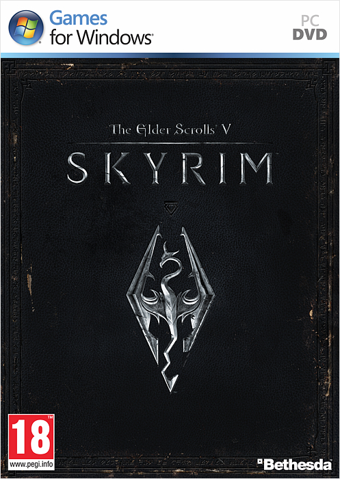

|
Главная
Расы
Навыки
Заклинания
|

The Elder Scrolls V: Skyrim
The Elder Scrolls V: Skyrim (дословно с англ. — «Древние свитки 5: Скайрим»)
— мультиплатформенная компьютерная ролевая игра с открытым миром, разработанная
студией Bethesda Game Studios и выпущенная компанией Bethesda Softworks. Это
пятая часть в серии The Elder Scrolls. Игра была выпущена 11 ноября 2011 года
для Windows, Playstation 3 и Xbox 360. Для игры были выпущены три загружаемых
дополнения под названиями Dawnguard, Hearthfire и Dragonborn, позже объединенных
в издании The Elder Scrolls V: Skyrim — Legendary Edition. Осенью 2016 года
было выпущено переиздание для Windows, Playstation 4 и Xbox One, включающее в
себя те же дополнения, обновленную графику и поддержку пользовательских модификаций.
|